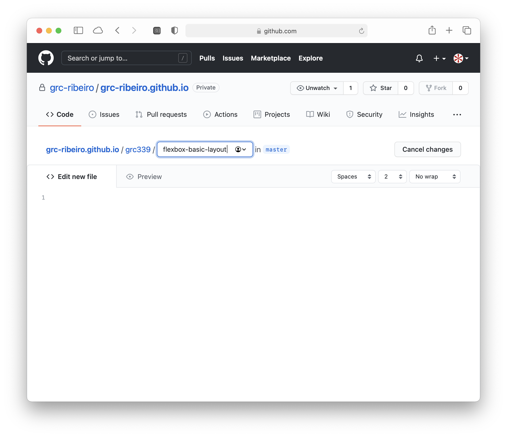
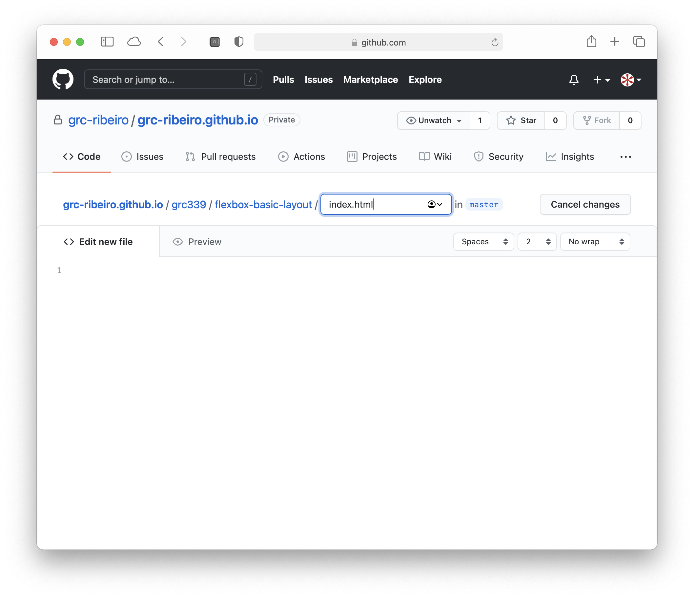
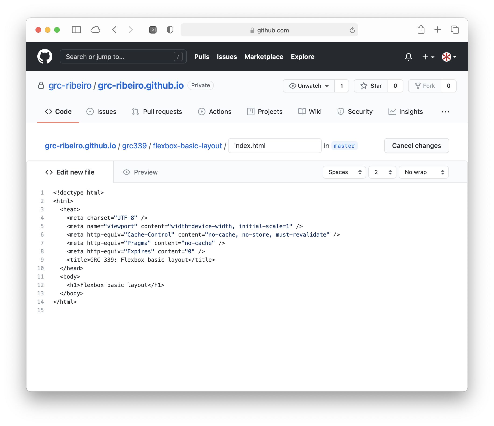
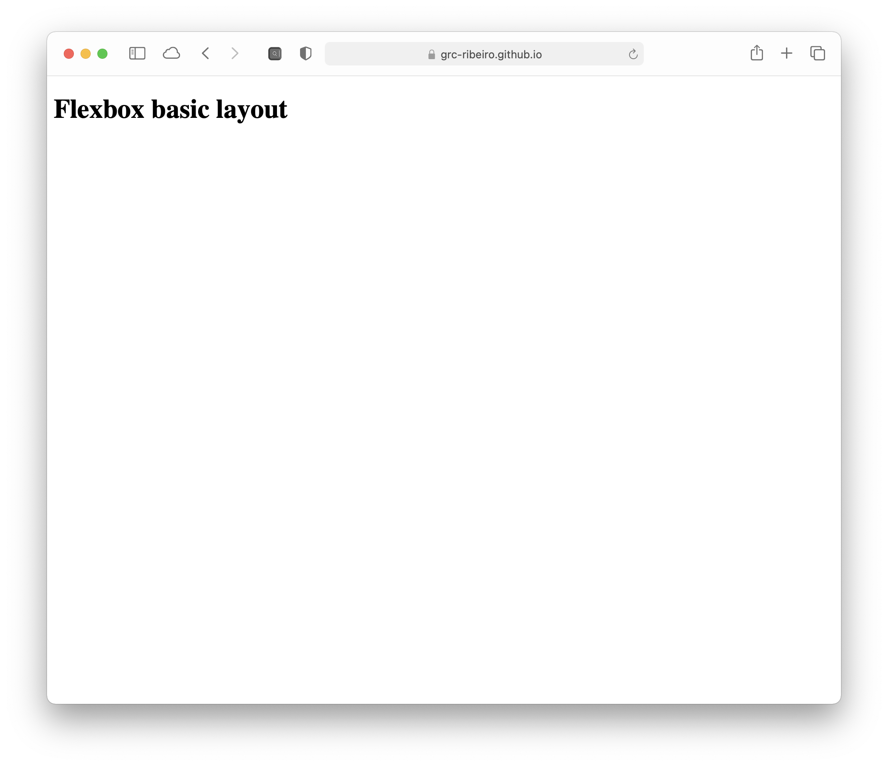

In your username.github.io repository create the grc339 folder.
Get each assignment name and assignment URL from this list:
Flexbox basic layout:
flexbox-basic-layoutFlexbox form:
flexbox-formCSS photo gallery:
css-photo-galleryDigital magazine proposal:
digital-magazine-proposalDigital magazine:
digital-magazine
Starting with the first from the list, create a subfolder in your grc339 with the URL of the assignment. (For the first assignment, it’s flexbox-basic-layout.)

Type / so it’s a folder, then create an index.html file in it.

Replace Assignment name in lines 9 and 12 of your file with the actual assignment name. (For the first assignment, it’s Flexbox basic layout.)
Paste the following code in it:
<!doctype html>
<html>
<head>
<meta charset="UTF-8" />
<meta name="viewport" content="width=device-width, initial-scale=1" />
<meta http-equiv="Cache-Control" content="no-cache, no-store, must-revalidate" />
<meta http-equiv="Pragma" content="no-cache" />
<meta http-equiv="Expires" content="0" />
<title>GRC 339: Assignment name</title>
</head>
<body>
<h1>Assignment name</h1>
</body>
</html>

Commit! Remember, you gotta commit!

Check your URL.

Repeat steps 3 to 8 for each assignment in step 2.
Check if you have all your five subfolders in your grc339 subfolder.